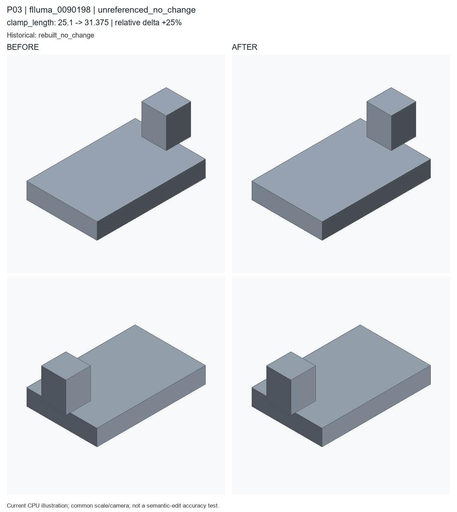

unreferenced_no_change; clamp_length: 25.1 → 31.375. Author semantic confirmation PENDING.

Historical record: rebuilt_no_change. These are current CPU re-exports, not recovered historical STEP bytes.
Original case metadata and literal examples · Exact code difference · Camera and geometry diagnostics
params = Parameters()
params.add('clamp_jaw_height', 18.58, min=5.0, max=28.0, expression='thickness * 1.27', semantic_type='clamp_jaw_height')
params.add('clamp_jaw_width', 15.12, min=6.0, max=28.0, expression='width * 0.227', semantic_type='clamp_jaw_width')
params.add('clamp_length', 25.1, min=8.0, max=40.0, expression='width * 0.38', semantic_type='overall_length')
params.add('clamp_thickness', 12.6, min=3.0, max=25.0, expression='thickness * 1.05', semantic_type='thickness')
params.add('height', 43.2, min=12, max=80, semantic_type='overall_height')
params.add('hole_radius', 2.14, min=1, max=8, semantic_type='hole_radius')
params.add('pocket_width', 15.1, min=8.0, max=40.0, expression='width * 0.227', semantic_type='pocket_width')
params.add('thickness', 10, min=3, max=25, semantic_type='thickness')
params.add('width', 66.6, min=20, max=120, semantic_type='overall_width')
part = Part('flluma_0005100', category='pipe_clamp', parameters=params, seed=20265614, sample_id='flluma_0005100', units='mm')
plate = part.plate(name='clamp_base', width=params['width'], height=params['height'], thickness=params['thickness'], semantic_type='base_plate')
pocket = part.box(name='pipe_clearance_channel_seed', length=params['clamp_jaw_width'], width=params['pocket_width'], height=params['clamp_jaw_height'], semantic_type='pocket')
moved = part.translate(name='place_pipe_clearance_channel', target=pocket, offset=[-30.74, 0.0, 16.69], semantic_type='placement_offset')
join = part.boolean_join(name='join_clamp_jaw', target=plate, tool=moved, semantic_type='joined_clamp_jaw')
pocket_2 = part.box(name='pipe_support_clearance_channel_seed', length=22.94, width=11.04, height=params['clamp_thickness'], semantic_type='pocket')
moved_2 = part.translate(name='place_second_clamp_jaw_channel', target=pocket_2, offset=[19.344, 0.0, 20.345], semantic_type='placement_offset')
pocket_3 = part.boolean_cut(name='cut_clamp_jaw_channel', target=join, tool=moved_2, semantic_type='pocket')
__all__ = ['part']params = Parameters()
params.add('clamp_jaw_height', 18.58, min=5.0, max=28.0, expression='thickness * 1.27', semantic_type='clamp_jaw_height')
params.add('clamp_jaw_width', 15.12, min=6.0, max=28.0, expression='width * 0.227', semantic_type='clamp_jaw_width')
params.add('clamp_length', 31.375, min=8.0, max=40.0, expression='width * 0.38', semantic_type='overall_length')
params.add('clamp_thickness', 12.6, min=3.0, max=25.0, expression='thickness * 1.05', semantic_type='thickness')
params.add('height', 43.2, min=12, max=80, semantic_type='overall_height')
params.add('hole_radius', 2.14, min=1, max=8, semantic_type='hole_radius')
params.add('pocket_width', 15.1, min=8.0, max=40.0, expression='width * 0.227', semantic_type='pocket_width')
params.add('thickness', 10, min=3, max=25, semantic_type='thickness')
params.add('width', 66.6, min=20, max=120, semantic_type='overall_width')
part = Part('flluma_0005100', category='pipe_clamp', parameters=params, seed=20265614, sample_id='flluma_0005100', units='mm')
plate = part.plate(name='clamp_base', width=params['width'], height=params['height'], thickness=params['thickness'], semantic_type='base_plate')
pocket = part.box(name='pipe_clearance_channel_seed', length=params['clamp_jaw_width'], width=params['pocket_width'], height=params['clamp_jaw_height'], semantic_type='pocket')
moved = part.translate(name='place_pipe_clearance_channel', target=pocket, offset=[-30.74, 0.0, 16.69], semantic_type='placement_offset')
join = part.boolean_join(name='join_clamp_jaw', target=plate, tool=moved, semantic_type='joined_clamp_jaw')
pocket_2 = part.box(name='pipe_support_clearance_channel_seed', length=22.94, width=11.04, height=params['clamp_thickness'], semantic_type='pocket')
moved_2 = part.translate(name='place_second_clamp_jaw_channel', target=pocket_2, offset=[19.344, 0.0, 20.345], semantic_type='placement_offset')
pocket_3 = part.boolean_cut(name='cut_clamp_jaw_channel', target=join, tool=moved_2, semantic_type='pocket')
__all__ = ['part']